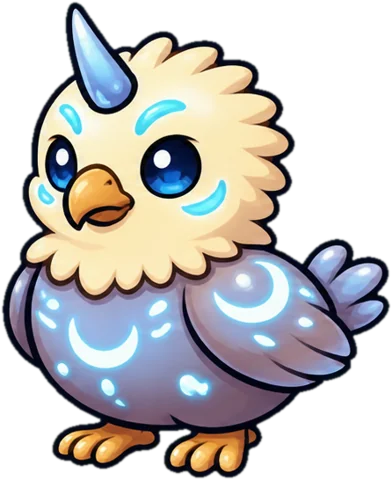

 Wind
Wind Psychic
PsychicTap a stage to read its story.
Skykit is a tiny fluffy round bird with pale blue-grey downy feathers and a single brilliant blue crest spike on its forehead. Its wide blue eyes hold genuine curiosity and its stubby wings flutter constantly even when it is sitting still, as though it is perpetually about to take off. It perches on Dragon Spire's lower ledges and watches the much larger creatures above with an expression of total intent - it is studying everything it sees, storing it away for later use. Nestlings are often found sitting motionless in the wind for minutes at a time.
Field note: Skykit memorises the wingbeat pattern of every other flyer it watches - trainers say it can mimic any aerial manoeuvre it has observed, once it is large enough.
Dragon Spire. Skykit and its family are found in the Dragon Spire. See everyone who lives there.
Share a Bond Food that matches its types to become friends. Skykit loves:
A Bond Food is not a trick. It joins your spirit with the Kimuro's spirit, and only when it chooses you.
Print the Kimuro adventure packs: mazes, cards, a board game and Bond Mark medals.
See the printable packs